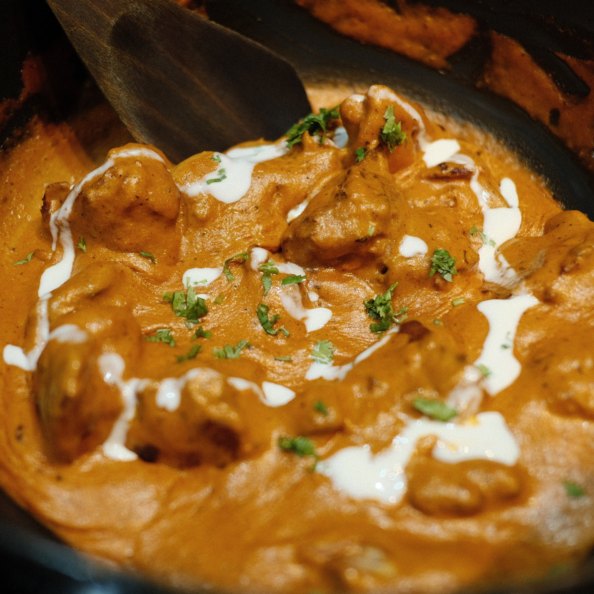

Description
Delicious Indian butter chicken at home. It is so flavorful and easy to prepare. Butter Chicken simmers in a buttery tomato sauce and is punctuated by several special spices and herbs. Skip the Indian takeout and cook up your very own version of the popular dish! The entire family loves it. Serve over warm basmati rice along with some naan bread.
Ingredients
Marinade
- boneless, skinless chicken thighs (1 lbs / 450 gms)
- yogurt (1/4 cup)
- olive oil (1 tbsp)
- ginger garlic paste (1 tbsp)
- dried coriander (1 tsp)
- kashmiri Lal Mirch(1 tsp)
- cumin(1 tsp)
- salt
Sauce
- whole almonds (8-10 in no.)
- cashews (8-10 in no.)
- butter (2 tbsp)
- ginger garlic paste (1 tbsp)
- sugar (1 tsp)
- tomatos (diced 1 cup)
- ground garam masala
- dried coriander
- kashmiri Lal Mirch(1/2 tsp)
- salt (to taste)
- water (1/4 cup)
- cream (2 tbsp)
- kasuri methi(1/2 tsp)
Procedure
Marinate the chicken
- Bring the chicken and the rest of the marinade ingredients together in a large bowl.
- Using your hands, massage the marinade into the chicken.
- Cover with plastic wrap and refrigerate for at least 1 hour, or up to overnight.
Soaking
- Soak cashews and almonds in water for at least an hour
Cooking the chicken
- Heat a skillet or grill pan over medium-high heat. Drizzle a teaspoon of oil to the pan.
- Working in batches, remove chicken from the marinade and grill them on the pan for 3 to 5 minutes on each side, until the chicken is cooked through (clear juice runs out of it when you cut into it).
- Once cooked, transfer the chicken into a separate dish. Cover and set aside for later.
Making the Sauce
- Melt 1 1/2 tablespoons of the butter in a medium sized pot, on medium heat
- As soon as the butter melts, add the ginger garlic paste followed by sugar. Sauté for 1 to 2 minutes.
- Stir in the tomato and cook for 8 to 10 minutes on medium high heat, until all the extra liquid is cooked off. The sauce should be a loose, paste-like consistency.
- Add coriander, garam masala, Kashmiri Lal Mirch, and salt. Stir and cook on medium heat for 2 to 3 minutes. Turn off the heat.
Blending the Sauce
- Transfer the paste to a blender or the bowl of a food processor. Add the soaked cashews and almonds. Blend into a smooth paste.
Finishing
- Return the paste to the cooking pan over medium heat. Add the water to the paste and stir to make a smooth sauce.
- As the sauce begins to boil, add the grilled chicken and heavy cream. Stir well. Cover the pan and simmer for 5 minutes.
- Turn off the heat and uncover the pan.
- Stir in the remaining 1/2 tablespoon butter and the kasuri methi.
- Cover again, and let the dish rest for 8 to 10 minutes so the flavor of kasuri methi can marry into the butter chicken.
Serving
- Serve the butter with a side of steamed basmati rice, roti, or naan.
Source: Simply Recipes
Image: Unsplash
Disclaimer: The content used here belongs to Simply Recipes. This page was created as a part of coding assignment.